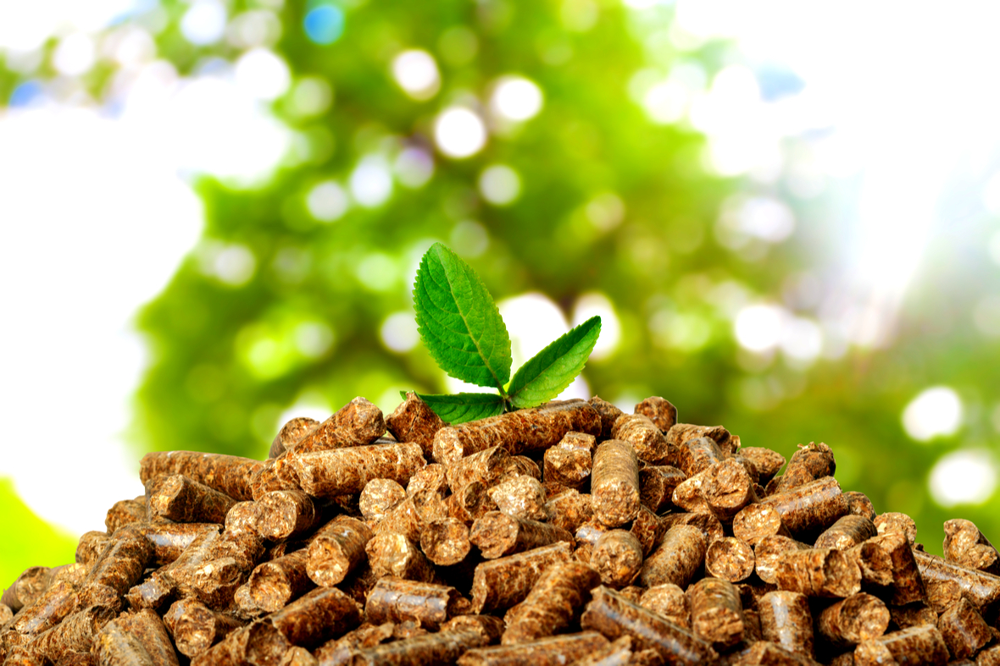

O que é a energia da Biomassa?
Na conceção da geração de energia, o termo biomassa aglomera todos os derivados recentes de organismos vivos que são utilizados como combustíveis ou para a sua produção desses mesmos combustíveis.
Do ponto de vista ecológico biomassa é a quantidade total da matéria viva existente em um ecossistema ou numa população quer animal quer vegetal. Estes dois conceitos estão por conseguinte interligados entre eles, embora sejam algo diferentes.
Simplificando podemos dizer que são designados por biomassa os resíduos sólidos naturais e os resíduos resultantes da catividade humana., ou seja são biomassa os subprodutos da pecuária, da agricultura, da floresta ou da exploração da indústria da madeira, etc.
Definição de Biomassa na geração de energiaPara a definição de biomassa no contexto da geração de energia não são contabilizados os tradicionais combustíveis fósseis, apesar de estes serem também derivados do ramo vegetal e mineral (são exemplos carvão mineral do ramo vegetal e o petróleo e gás natural do ramo mineral), no entanto estes são resultado de várias transformações que requerem vários milhões de anos para acontecerem. Como a biomassa é utilizada e transformada em energia utilizável?A biomassa é utilizada diretamente como combustível ou através da produção de energia a partir de processos de pirólise, gasificação, combustão ou co-combustão de material orgânico que se encontra presente num ecossistema. |
|
Existem quatro formas de transformar a biomassa em energia:Pirólise: através dessa técnica, a biomassa é exposta a supremas temperaturas sem a presença de oxigénio, mirando o acelerar da decomposição da mesma. O que sobra da decomposição é uma mistura de gases, líquidos (óleos vegetais) e sólidos (carvão vegetal). Gasificação: assim como na pirólise, aqui a biomassa também é acalorada na ausência do oxigénio, originando como produto final um gás inflamável. Esse gás ainda pode ser filtrado, visando à remoção de alguns componentes químicos residuais. A diferença básica em relação à pirólise é o fato de a gaseificação exigir menor temperatura e resultar apenas em gás. Combustão: aqui a queima da biomassa é realizada a altas temperaturas na presença abundante de oxigénio, produzindo vapor a alta pressão. Esse vapor geralmente é usado em caldeiras ou para mover turbinas. É uma das formas mais comuns hoje em dia e sua eficiência energética situa-se na faixa de 20 a 25%. Co-combustão: essa prática propõe a substituição de parte do carvão mineral utilizado em urnas termoelétricas por biomassa. Dessa forma, reduz-se significativamente a emissão de poluentes. A faixa de desempenho da biomassa encontra-se entre 30 e 37%, sendo por isso uma escolha bem atrativa e económica atualmente. |
 |